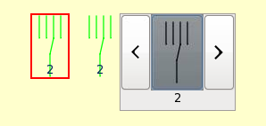
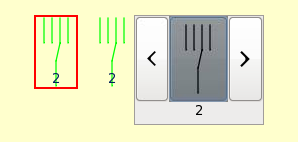

A Multi-state symbol control widget uses multiple images to represent its different state. It supports GIF, PNG and SVG format.
"On/Off" colors of the symbol image can be selected. "Off" refers to "state 0" and "On" to all other states. These colors will affect only black elements in the symbol (strokes or filled forms). A label displaying the current state can be activated.
The multistate image file name must include the state value in order to be displayed when the variable has this value, otherwise the widget will display "??".
The File Path Browser automatically filters the filename with a regular expression which is based on the PV name.
This option can be unchecked in the browser. The regular expression is defined in the preferences.ini file (filter_regex).
 

Stretch to Fit is not enabled.